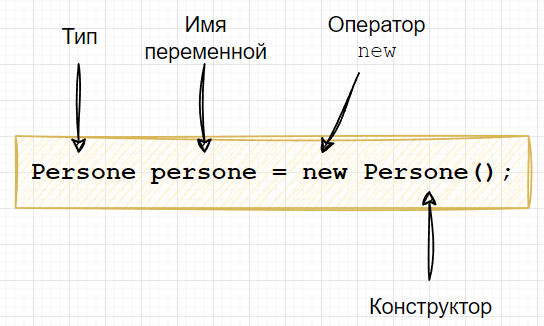
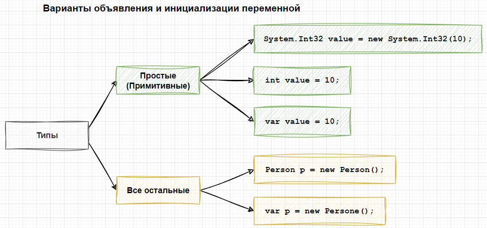
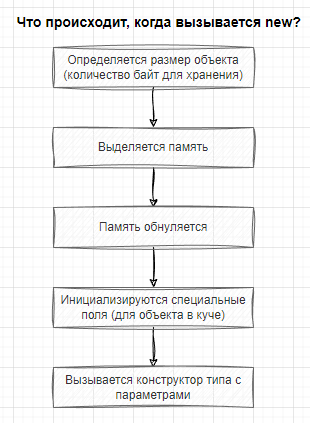

Тема 4. Оператор new. Ключевое слово var и неявная типизация. Оператор default.
Назад
Оператор new
Варианты инициализации переменных, уже рассмотренные в этом
уроке, являются сокращенным видом более общего подхода, который
реализуется с использованием оператора new.
Это требование уровня CLR,
суть которого в том, что все создаваемые объекты должны
инициализироваться оператором new.
Вот пример объявления переменной типа Person:
Person p = new Person();

В процессе работы, программистам, как правило, приходится
довольно много работать с числами, строками и т. п. Каждый раз
набирать полный вариант объявления переменной было бы
утомительно. Чтобы исключить это было принято решение поддержать
на уровне компилятора набор типов данных, для которых
предусмотрен более лаконичный синтаксис. Если бы это было не
так, объявление переменной типа int выглядело
бы следующим образом:
System.Int32 value = new System.Int32(10);
В этой строке создается переменная с именем value и
значением 10.
Эту запись можно сократить до следующего вида:
int value = 10;
Для остальных типов данных, для которых не предусмотрены
подобные сокращения, используется только вариант с new.

При выполнении оператора new:
Сначала определяется необходимый набор байт для хранения
объекта типа (включая дополнительные специальные поля, если
данные будут храниться в куче).
Выделяется соответствующая память, и все байты
зарезервированного пространства обнуляются.
Инициализируются дополнительные специальные поля (если
объект хранится в куче).
Вызывается конструктор типа с указанными параметрами.
Конструктор – это такой специальный метод, который
вызывается оператором new при
создании экземпляра типа, о нём мы поговорим, когда более
детально будем изучать классы.

Ключевое слово var.
Неявная типизация
При объявлении переменной, вместо явного задания типа можно
использовать ключевое слово var.
В этом случае будет
использована система вывода типов для определения типа
переменной по ее значению.
В примере ниже, переменные v1 и v2 имею
тип int.
int v1 = 12345;
var v2 = 12345;
Console.WriteLine($"Type of v1: {v1.GetType()}\n Type of v2: {v2.GetType()}");
Результатом выполнения будет следующее:
Type of v1: System.Int32
Type of v2: System.Int32
Рассмотрим разные варианты создания и инициализации переменных.
Наиболее полный вариант:
Dictionary<string, int> dict = new Dictionary <string, int>()
Можно сократить вот так:
Dictionary<string, int> dict = new()
Или воспользоваться var:
var dict = new Dictionary<string, int>()
При работе с var необходимо
помнить следующее:
использовать var можно
только для объявления локальных переменных;
var нельзя использоваться для объявления типа
возвращаемого значения, типов полей и параметров;
при объявлении переменной с использованием var,
она обязательно должна быть проинициализирована, при этом
использовать для этого null запрещено;
объявлять переменную допускающую null-значение
с использованием лексемы ? через var нельзя.
Про допускающие null-значение
переменные мы поговорим подробно позже в нашем курсе.
Оператор default
Оператор default создает
значение по умолчанию для указанного типа, он используется
следующим образом: default(T),
где T –
это тип, для которого нужно создать соответствующее значение.
Объявим переменную типа int и
присвоим ей значение по умолчанию с помощью new.
int n = new int();
Console.WriteLine($"Значение по умолчанию для int: {n}");
То же самое можно сделать с помощью оператора default:
int n = default(int);
Console.WriteLine($"default(int): {n}");
Если C# может самостоятельно вывести тип, то можно
воспользоваться не оператором, а литерой default,
без явного указания типа:
int n = default;
Console.WriteLine($"default: {n}");
Этот оператор полезен при разработке методов с обобщенным типом.
Обобщения – это механизм C#, который позволяет вам написать код
без явной привязки к конкретным типам.
Создадим метод, который выводит на консоль значение по умолчанию
для типа переданного в нее аргумента:
static void PrintDefaultValue<T>(T val)
{Console.WriteLine($"Тип аргумента val: {val.GetType()}");
Console.WriteLine($"Значение по умолчанию для типа {val.GetType()}: {default(T)}");
Console.WriteLine($"Текущее значение аргумента val: {val}");}